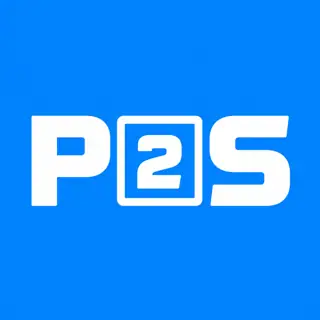
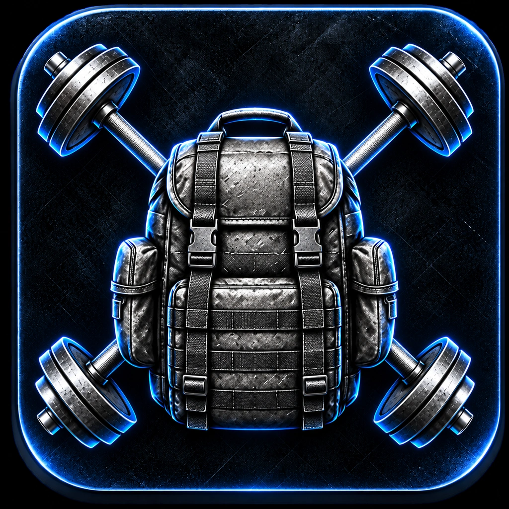
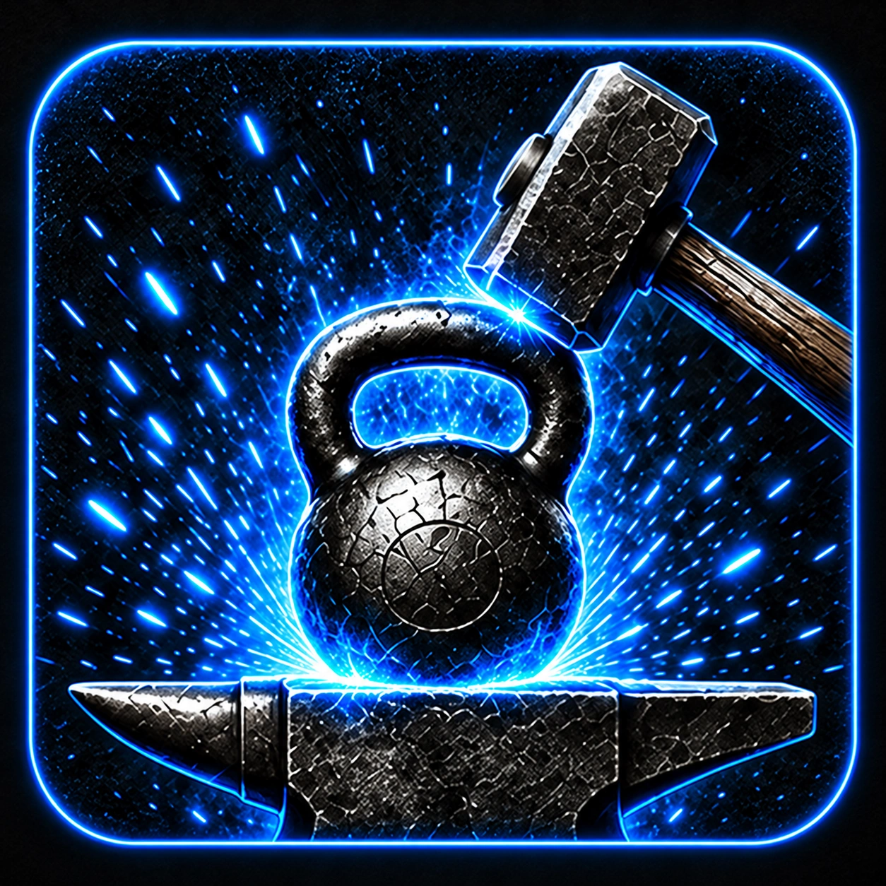
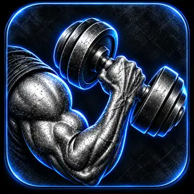
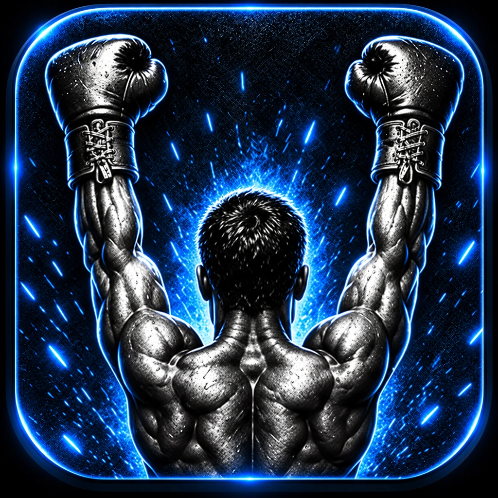
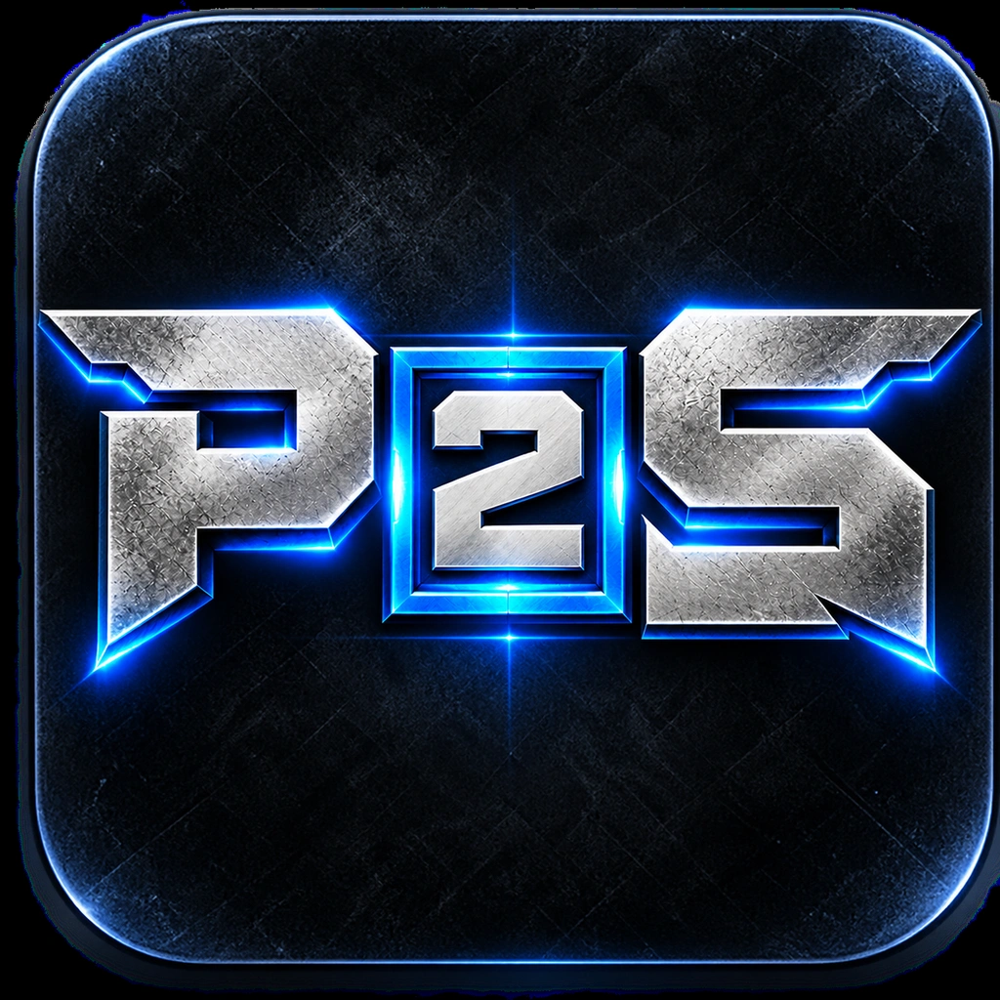
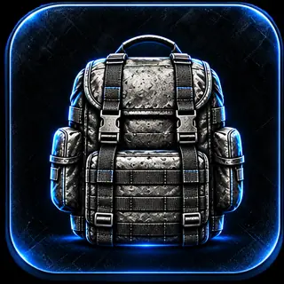

Strength
Operational Strength
Compound lifts, bodyweight strength, loaded movement, and durability.
Explore this path
Barbell · Pull-up bar · Ruck.
Choose this program in P2S, review the training, and adjust it to suit your preferences.

PREPAREDA TRAINING SYSTEM THAT ADAPTS
Choose a structured plan, shape it around your goals, then track every session. P2S keeps the tools straightforward so you can focus on the work.

THE P2S LINEUP
Six built-in programs, a custom builder, and ruck tracking. Explore the options below, then choose your program in the app.
8 training paths
Compound lifts, bodyweight strength, loaded movement, and durability.
Barbell · Pull-up bar · Ruck.
Choose this program in P2S, review the training, and adjust it to suit your preferences.

02 / P2SStrength, power, conditioning, and athletic skill in a progressive training path.
Gym · Functional equipment.
Choose this program in P2S, review the training, and adjust it to suit your preferences.
Structured calisthenics for training at home, on the road, or away from the gym.
No exercise equipment.
Choose this program in P2S, review the training, and adjust it to suit your preferences.

04 / P2SStrength and conditioning for building practical, repeatable work capacity.
Strength + conditioning.
Choose this program in P2S, review the training, and adjust it to suit your preferences.
Strength, grip, rotational power, and conditioning to support demanding physical work.
Strength + loaded carries.
Choose this program in P2S, review the training, and adjust it to suit your preferences.

06 / P2SA deliberate return to consistent strength, endurance, and mobility training.
Foundation + progression.
Choose this program in P2S, review the training, and adjust it to suit your preferences.

07 / P2SBuild a plan or import your own. Review the exercises, working sets, and targets before training.
Build · Paste · Review.
Open this tool in P2S to configure your training.

08 / P2STrack your distance, time, pace, carried load, terrain, and available heart-rate data.
Outdoor + treadmill.
Open this tool in P2S to configure your training.
CUSTOM PROGRAM BUILDER
Create a program from scratch or paste a workout plan you already have. P2S is designed to recognize common workout layouts—including day headings, exercise tables, sets, reps, rest periods, and notes—then organize the routine for you.
TRAIN. LOG. REPEAT.
Workout tools built for a clear, steady training flow.
Track exercises, sets, reps, and weight while you train. Keep a useful history to review how sessions are progressing.
Use the built-in rest timer to stay on pace between sets without losing track of your workout.
Review workout and ruck activity in the Statistics area and see your training add up over time.
TRAIN WITH PURPOSE